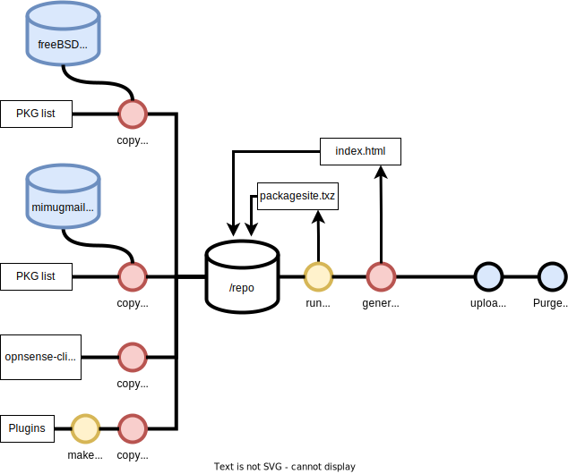

Repository for OPNsense firewall with some plugins, CLI tools and mirrors of packages from other sources. See list of packages in repo below.
To install this repo:
fetch -o /usr/local/etc/pkg/repos/repo-mihak.conf https://repo.mihak.link/repo-mihak.conf pkg update
Find out what is available in the (installed) repo:
pkg search -g -r repo-mihak \*
Remove this repo:
rm /usr/local/etc/pkg/repos/repo-mihak.conf
(removing the repo will not remove previously installed packages from the repo)
Find out what you have installed from this repo:
pkg query -a '%R %n-%v' | grep repo-mihak